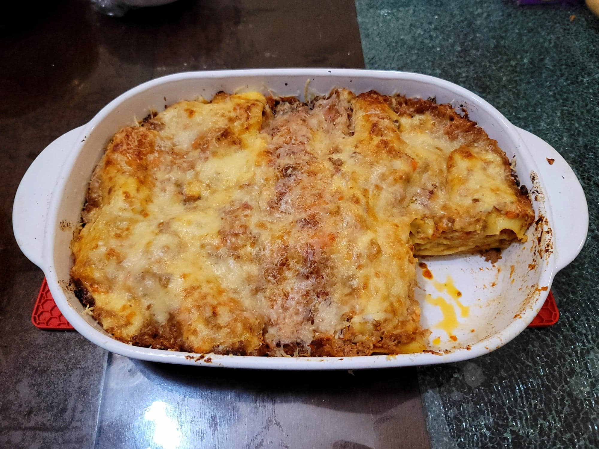

Lasagna alla Bolognese

Ingredients:
Bolognese:
Besciamella:
- 1/4 cup Butter
- 4 tbsp Flour
- 2 cups Milk
- 1/4 tsp Fine salt
- 1/8 tsp fresh grated Nutmeg
Lasagna:
- 1 lb Dried lasagna
- 1 cup Parmesan, grated
Instructions:
- For the besciamella, melt the butter in a large saucepan over low heat. Then whisk in the flour until smooth. In increments, whisk in the milk while whisking constantly. Once the milk is fully incorporated, let cook for 10-15 minutes while whisking constantly, or until a thick consistency. Then remove from the heat and whisk in the salt and nutmeg.
- Bring a large pot of salted water to a boil. Place in the lasagna and cook until al dente, about 8-9 minutes. Then strain from the water. Skip this step if using oven-ready lasagna.
- Preheat the oven to 375 degrees Fahrenheit.
- Start to construct the lassagna by coating the base of the baking dish with some bolognese sauce. Then start with a layer of lasagna, followed by a layer of both the bolognese and besciamella (about 2 tbsp or more of each), and then topped with a layer of the parmesan (also about 2 tbsp). Repeat this layering until the lasagna is finished. Then finish with an extra thicker layer of parmesan.
- Place into the oven and bake for about 30 minutes. Optionally for some color, transfer to a broiler for that last 1-2 minutes. Then remove from the oven and let rest for at least 10 minutes before serving.